约 10 万年前
许家窑人
阳高县许家窑遗址出土石球、刮削器与人类化石，是这片土地上最早的居民痕迹之一。旧石器时代晚期的猎人，已经会做石球去打猎。
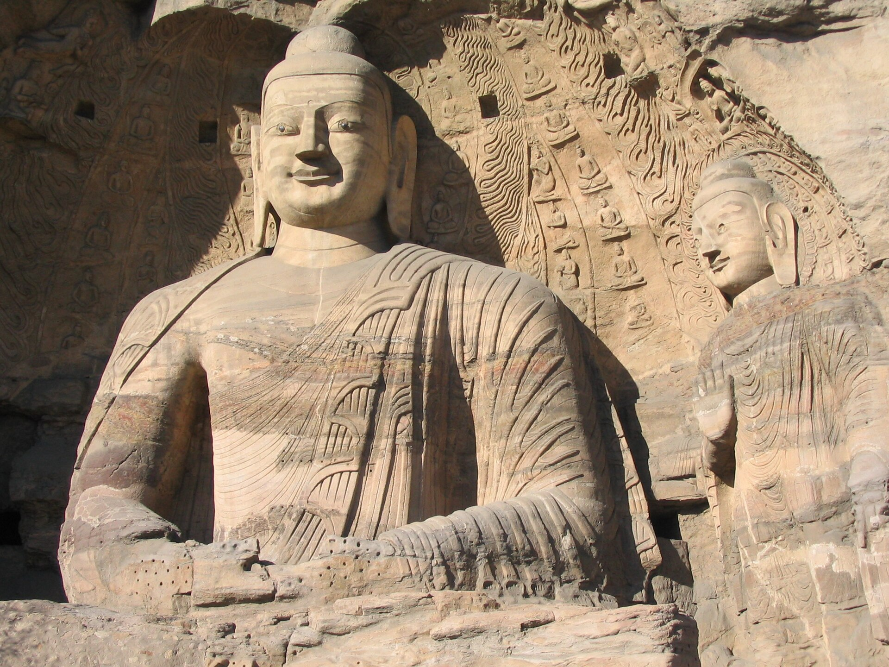
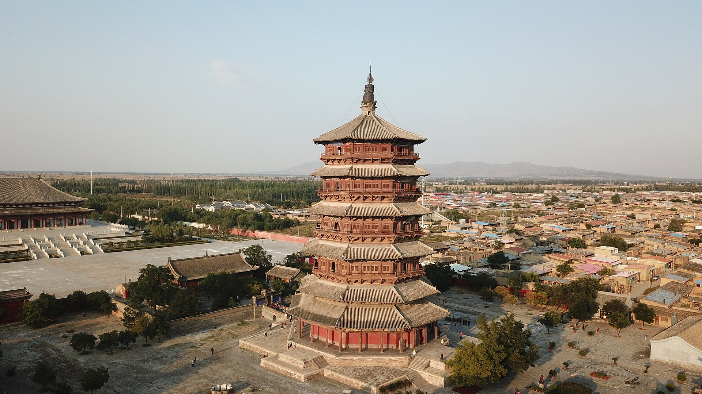
一半是石头，一半是烟火
桑干河畔的第一堆火，白登山上的一场大雪，北魏都城的十万锤凿，城墙根下的一碗热汤——都还在这座城里。
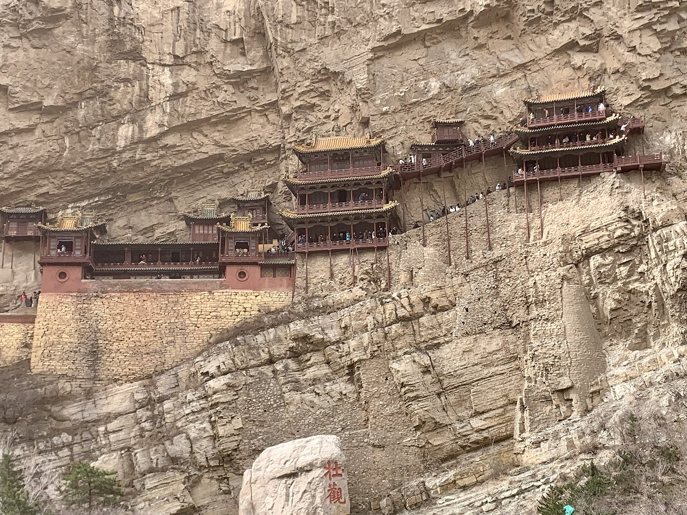
大同的"五千年"，要从桑干河两岸的新石器聚落算起。此后这里被反复改写：赵武灵王在此胡服骑射，刘邦在白登山被围七天，拓跋鲜卑把国都搬来，辽金把它称作西京，明代把它修成九边里最硬的一座城。
今天的城墙是明代的样子，城里却压着北魏的宫殿、辽金的寺院；往西十七公里，武州山的砂岩上，五万一千尊佛已经坐了一千五百多年。读大同，别只数景点，看它的时间层。
大同古称平城。旧石器时代晚期的"许家窑人"在阳高一带留下石球与刮削器；新石器时代，河谷台地上出现农业聚落；战国置郡，秦汉筑塞，城市逐渐长成北方门户。
公元 398 年，北魏道武帝拓跋珪迁都平城，此后九十六年，这里是中国北方的政治与信仰中心。迁都洛阳之后，大同没有退场——辽金以它为西京，明代以它为军事重镇，清代以它为晋北商埠。
八个节点，串起大同的五千年。点下面的按钮，可以只看某一段。
阳高县许家窑遗址出土石球、刮削器与人类化石，是这片土地上最早的居民痕迹之一。旧石器时代晚期的猎人，已经会做石球去打猎。
河谷台地上出现定居农业，磨制石器、彩陶、半地穴式房屋陆续出土。所谓"五千年文化"，起点就在这里。
赵武灵王北破林胡、楼烦，设雁门郡、代郡。中原的农耕与草原的骑射，第一次被同一条界线连在一起。
汉高祖刘邦北征匈奴，被围平城白登山七日，脱围后改行和亲。大同自此成为中原王朝的北大门。
拓跋珪迁都平城，历六帝九十六年。昙曜在武州山开五窟，云冈石窟由此诞生；当时的平城，是北方中国最国际化的城市之一。
辽设西京大同府，金代沿用。华严寺、善化寺在这一时期营建，辽金木构、彩塑与壁画留存至今。
大将军徐达在旧城基础上增筑城墙，周长七公里余，四门、瓮城、角楼齐备。大同镇扼守蒙古入塞要道，有"大同士马甲天下"之说。
列入首批国家历史文化名城；2001 年云冈石窟成为世界文化遗产；2008 年起城墙、华严寺、代王府片区陆续修复，老城里重新住进了人。
※ 年代取通行说法，史前遗存年代以考古测年为准；部分早期纪年为概数。
云冈凿在砂岩上，悬空寺钉在崖壁上，木塔靠斗拱咬合，华严寺藏着辽代的彩塑，城墙是夯土包砖的防御工事。五种材料，五个朝代，五种活法。
把一座王朝的审美，刻进武州山
公元 460 年，高僧昙曜在武州山南麓开凿五座大窟，即"昙曜五窟"。此后六十余年，皇室与僧俗接力经营，留下主要洞窟 45 个、窟龛 252 个、造像 51000 余尊。
早期的佛像雄浑壮硕，带犍陀罗与秣菟罗的影子；中期出现褒衣博带的中原式样，面容清瘦；晚期转向民间化的小龛。一次开凿，就是半个世纪的艺术演变。
四十间殿阁，挂在九十度的崖壁上
寺贴着恒山金龙峡西侧的翠屏峰修，距谷底约五十米。木构以插入岩壁的横梁为基，梁下立柱多为装饰，真正吃力的是嵌进砂岩的横木。
寺内三教殿同时供奉佛、道、儒，是罕见的"三教合一"格局。2010 年，它被美国《时代》周刊列入"世界十大奇险建筑"。
六十七米，没用一颗钉子
佛宫寺释迦塔，俗称应县木塔，辽清宁二年（1056 年）建成。塔高 67.31 米，外观五层六檐，内部实为九层，所谓"明五暗四"。
整座塔靠斗拱与梁枋互相咬合，共用 54 种斗拱，无钉无铆，历经多次地震仍然站着。它与比萨斜塔、埃菲尔铁塔并称"世界三大奇塔"，是常见说法。
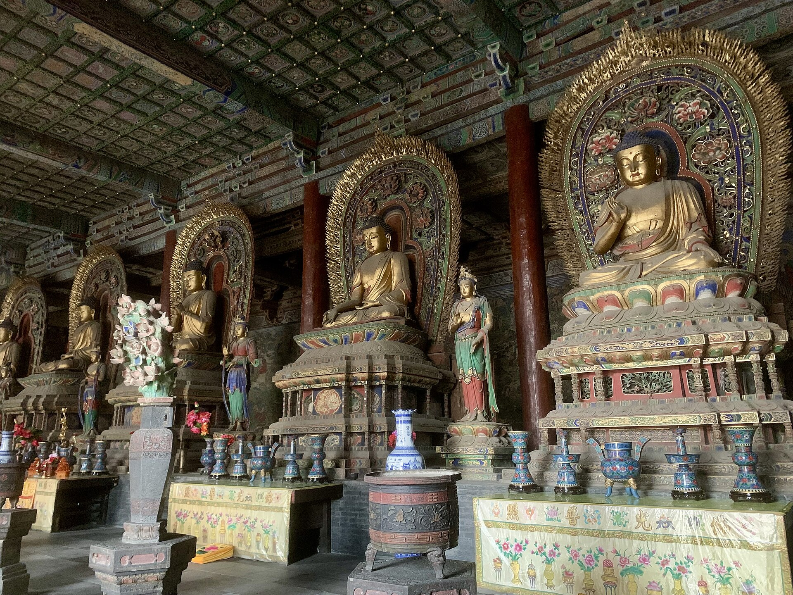
一座寺院，两件"海内孤品"
华严寺依《华严经》得名，分上、下两寺。上寺大雄宝殿为金天眷三年（1140 年）重建，面阔九间、进深五间，是我国现存最大的辽金佛殿之一。
下寺薄伽教藏殿内保存辽代彩塑 31 尊，其中一尊合掌露齿的菩萨，笑容浅浅、身姿微侧，被称作"东方维纳斯"。殿内还有按辽代建筑缩制的天宫楼阁壁藏，是现存极珍贵的辽代小木作标本。
七公里城圈，围住一座活的古城
明洪武五年（1372 年），大将军徐达在辽金旧城基础上增筑大同城。城墙周长约 7.24 公里，高 14 米，设和阳、永泰、清远、武定四门，门外有瓮城、月城，城上列角楼、望楼、箭楼。
明代大同是"九边"中最靠近草原的一镇，有"大同士马甲天下"之说。2008 年起城墙、护城河与城内街巷陆续修复，如今可以从永泰门登城，骑车绕一整圈。
大同的好东西太密。九龙壁是明代藩府的照壁，善化寺的辽金殿宇比华严寺更安静，云冈的窟内满壁小佛，华严寺的菩萨笑得像真人。点开看图。
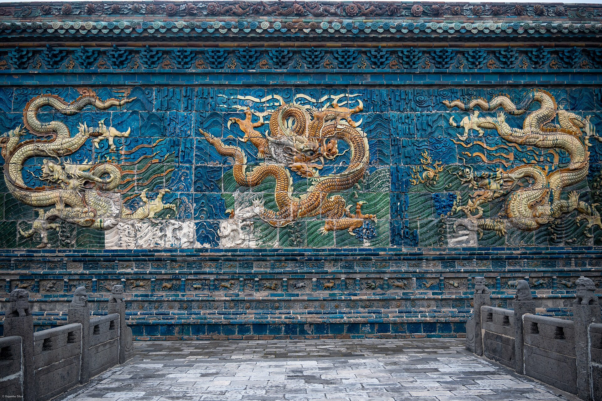
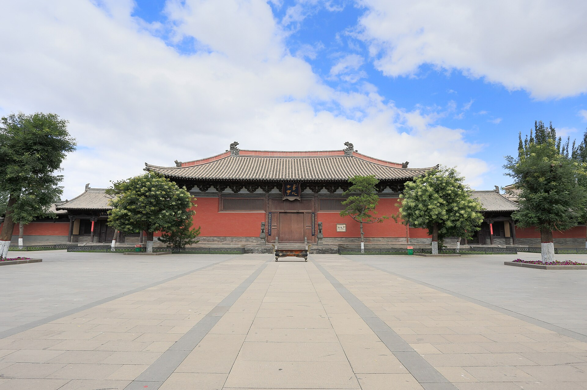
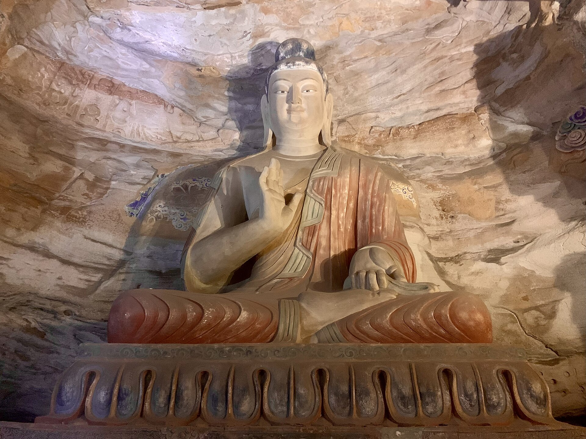
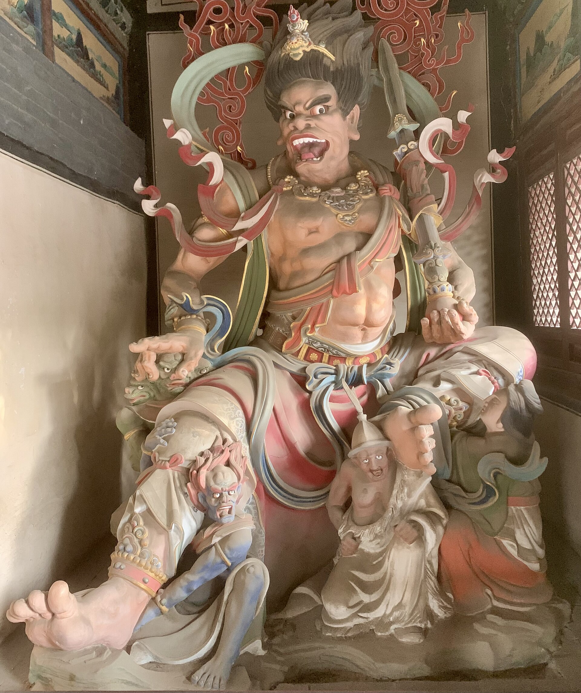
照片均来自 Wikimedia Commons，遵循 CC 授权，点击图片可查看摄影者与授权信息；另可对照 云冈研究院、UNESCO 云冈石窟 的公开资料。
干燥、寒冷、日照足，长出莜麦和土豆；紧邻草原，羊肉便宜又好吃。大同的餐桌就是地理写出来的：一碗面、一碗汤、一笼烧麦、一卷莜面、一盘凉粉。
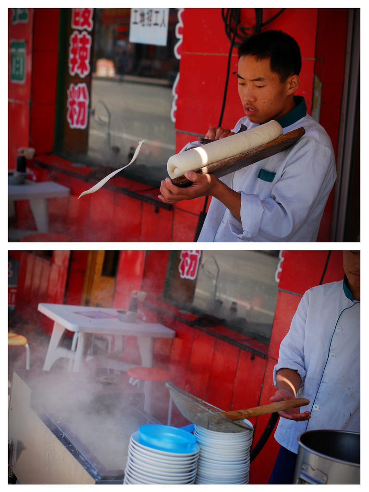
一把刀，削出柳叶一样的面
面团要揉得硬。师傅左手托面，右手一片弧形刀，一刀接一刀，面叶中厚边薄、形如柳叶，直接飞进滚水。捞起来浇肉臊子，撒香菜，再淋一勺老陈醋。
大同人吃面不看钟点：早上出门一碗，中午办事一碗，晚上收工还来一碗。面馆门口那口大锅和"当当"的削面声，就是这座城的背景音。
羊头、心、肝、肺、肚、肠收拾干净，和粉条同煮，葱花香菜辣椒油一冲。天不亮就有人排队，一碗汤下肚，从胃暖到耳朵。相传"杂割"之名起于元代，实情已难考，但这碗汤在大同的早晨排了几十年的队。
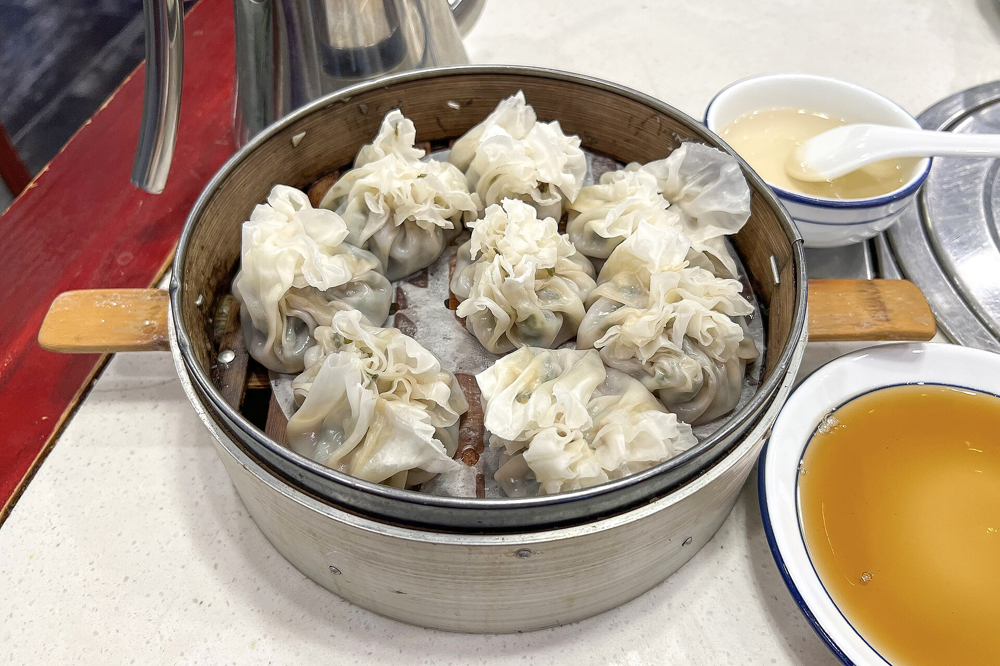
烫面擀出荷叶边，包羊肉大葱馅，收口一捏像朵花，蒸熟后皮子透亮、褶子立着。相传清末凤临阁以此闻名，1900 年慈禧西逃路过大同，尝后赐名"百花烧麦"。传说真假难说，一笼八个、蘸醋配砖茶，确实是老大同的待客方式。
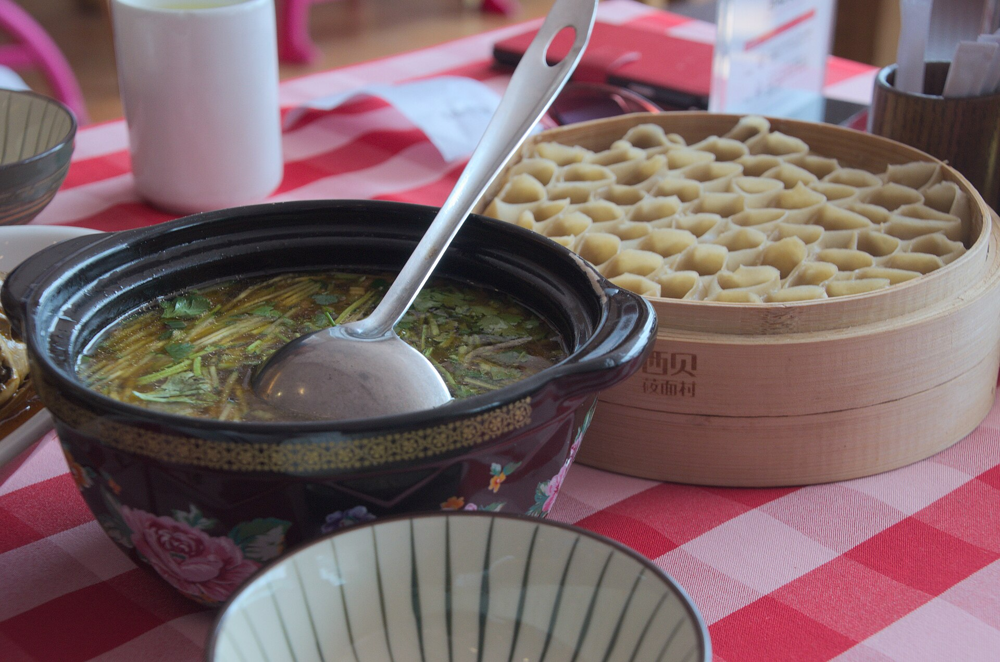
莜麦炒熟磨面，开水和团，揪一小块在石板上推成薄片，食指一绕，卷成中空的筒，立在笼里像蜂窝。蒸十分钟，蘸羊肉蘑菇卤或酸辣汁。雁北老话说："四十里莜面三十里糕，十里荞面饿断腰"——说的就是它顶饱。
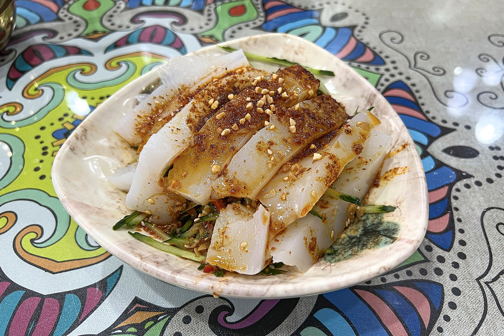
土豆淀粉熬成糊，晾凉凝成块，切条，浇醋、辣椒油、蒜水，撒上莲花豆和豆腐干。入口滑、嚼着韧，酸辣一起上头。浑源县城里老店最多，配一个熏鸡蛋正好；夏天在恒山脚下吃，风一吹更凉。
※ 图为食物类型示意（部分拍摄于外地餐馆），非大同具体店家出品；口味与做法各家不同，仅供参考。
大同是移民城市：戌卒、商旅、僧侣、匠人一代代迁来，把各地的腔调、手艺和口味都留下了。到今天，这些还在正月里响，在窗上红，在铜锅里滚。
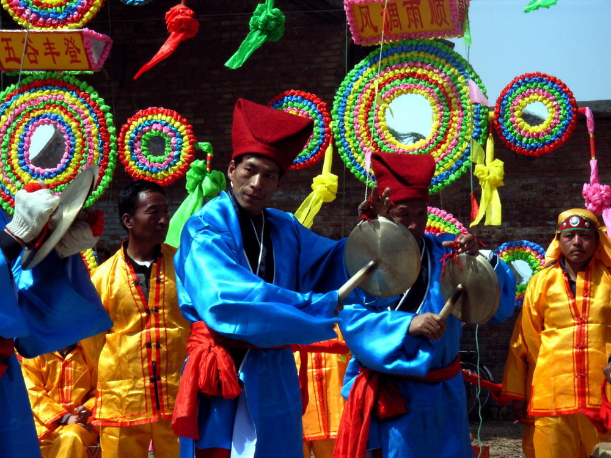
正月十五前后，古城街巷和县城广场上天天有场：挠阁把孩子架到大人的肩头，高跷、旱船、舞龙、秧歌一队接一队。看的人挤在墙根，被架着的孩子常常在半空打瞌睡。
又叫"咳咳腔"，用后嗓发声，粗粝里带苍凉。一个剧种靠一个剧团撑着，被叫作"天下独一团"，2006 年列入首批国家级非遗。
刻刀在宣纸上一刀一刀刻出人物花鸟，再手工染色，颜色浓得像年画。2009 年作为中国剪纸的一部分，列入联合国教科文组织人类非遗名录。
铜火锅、铜壶、铜盆，靠手工锻打和錾花成形。老城曾有"铜匠街"，如今这门手艺是国家级非遗，一口铜火锅仍是冬天涮羊肉的主角。
铁架把孩子固定在高处，妆成戏曲人物，随着大人的步子上下颤。看的人替他们捏一把汗，被架着的孩子却在打瞌睡。
农历四月初八，浑源恒山脚下赶庙会。香客上山，山脚摆摊，凉粉、油糕、面塑一路吃过去，是本地人一年一次的"爬山加赶集"。
属晋语大包片，入声短促。"咋啦""圪蹴""nia"这些词一出口，本地人立刻知道是自己人；桌上劝酒的豪爽，也是这套话里的。
一句话概括这方水土：边塞的直爽、农牧交汇的包容、匠人对细节的执拗，加上节庆里邻里共享的热闹——四样凑在一起，就是大同人的脾气。
景点分散在东、西、南三个方向，按"城里—西郊—东南"排，能少绕路。以下按自驾或包车写，公共交通需多留半天。
※ 时间按常规路况估算；悬空寺登寺需另购票且限流，节假日建议提前预约。应县木塔属朔州市，行程上算"大同周边"。
这一页跟着网站一起长大：每次改完、上线完，就在这儿留一条。按时间倒着排，最新的一条在最上面。
我已经把网站代码放到 GitHub，并通过 github.io 更新。学会了用 Git 留存版本、用 SSH 密钥推代码、用 Pages 把 index.html 变成公开网址。
首屏背景从单张大佛改成云冈大佛、应县木塔、大同城墙三张图轮播；顺便给「第一章」版本打了本地标签，知道了标签可以随时回到旧版本。
整理大同五千年文化脉络，从维基共享资源找了 15 张 CC 授权照片，学会给每张素材标注摄影者和许可证，不把别人的图当自己的。
佛像的鼻子被风磨平了，城墙是新修的，面馆的锅还是那口锅。
五千年不是陈列柜里的年份，是今天早上七点，门口那碗面冒的热气。
期待你的评价